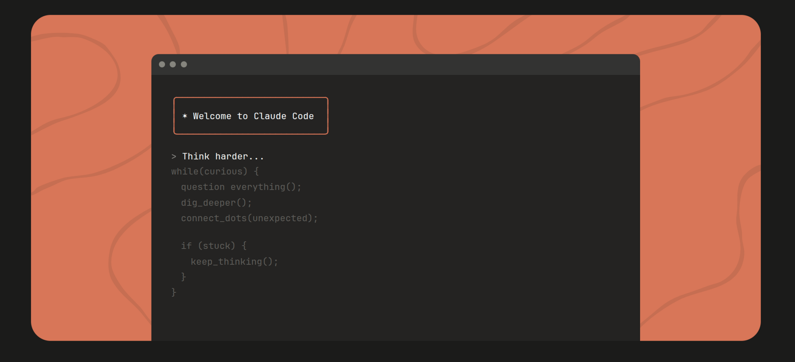
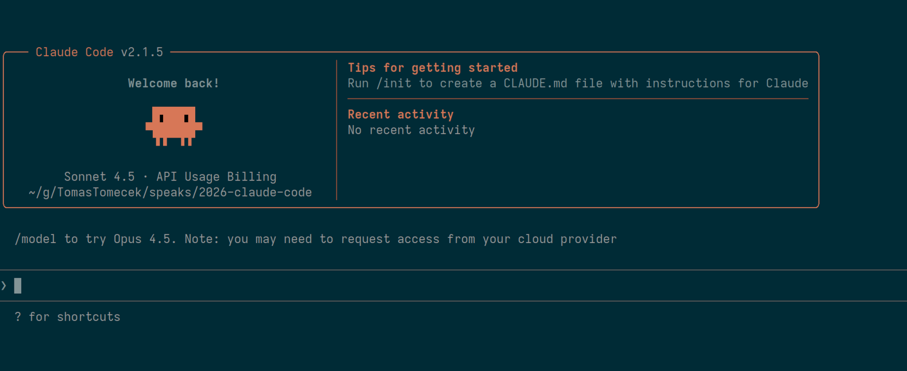
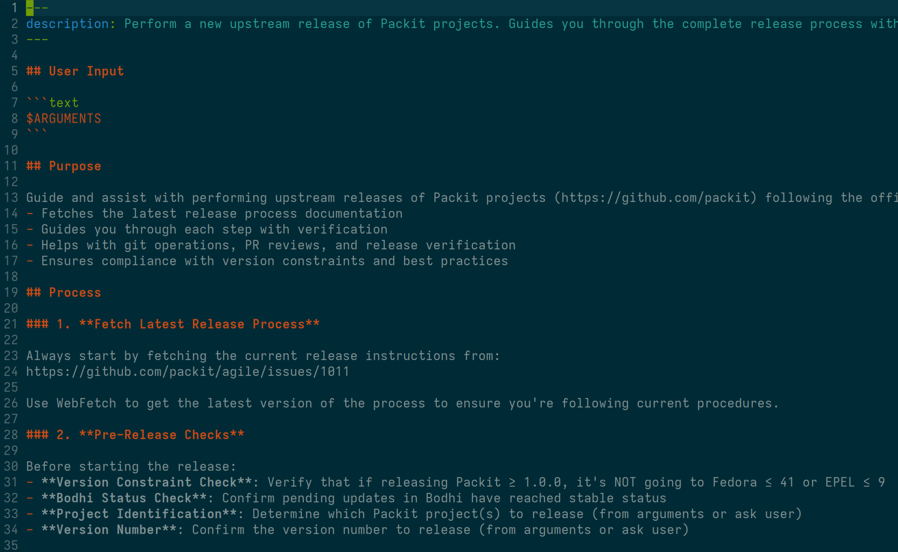
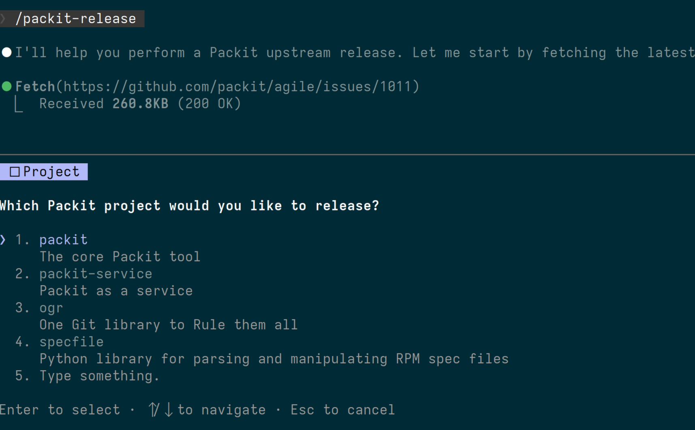
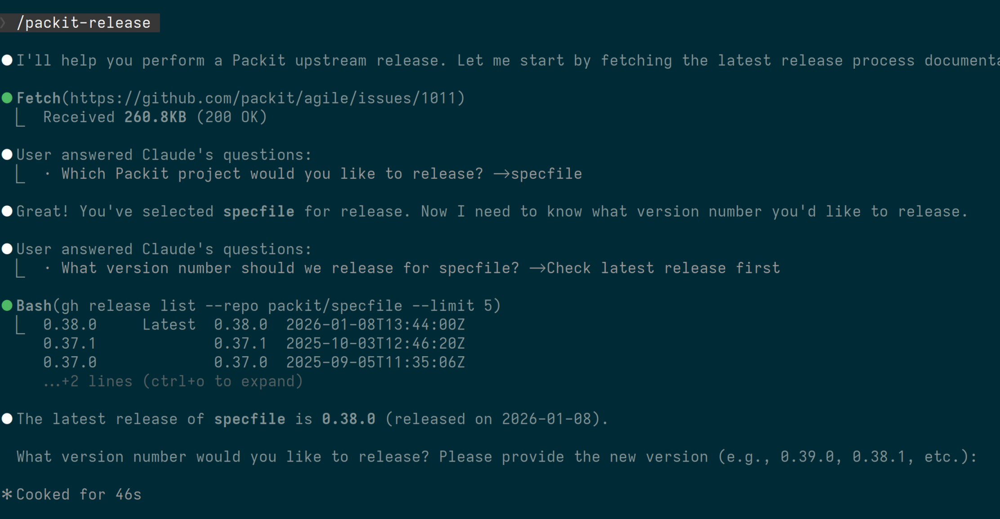
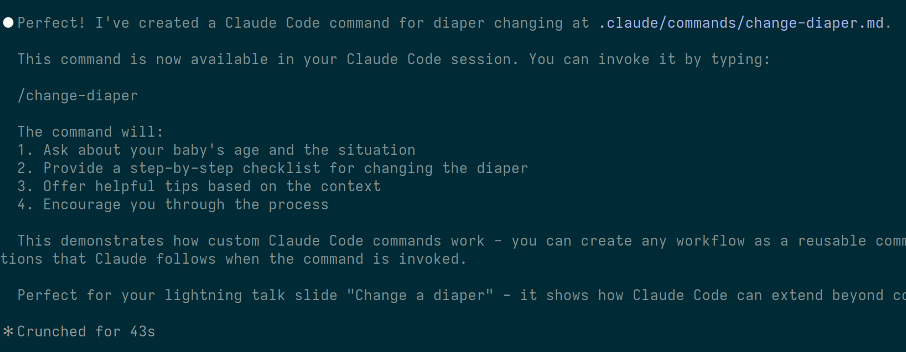

class: left, bottom, white, first-slide, background-black # Claude Code beyond the default shell ## Tomas Tomecek --- class: middle, center, white, background-black <p></p> --- class: white, background-black # Installation * Developer Toolbox: https://redhat.gitlab.io/rhel/tools/rhel-developer-toolbox/modules/claude_code.html * Official Red Hat guide: https://source.redhat.com/departments/it/itx/document_management_and_collaboration/dmc_wiki/claude_code_user_guide --- class: middle, center, white, background-black <p></p> --- # Slash commands Built-in shortcuts for common tasks: * `/status` - This one's clear * `/context` - How is LLM context occupied for this session? * `/cost` - How much did the current session cost and which models were used? * `/plan` - Enable planning mode or show the plan * `/rewind` - Go back to a previous checkpoint Try: Type `/` to see available commands ??? - "Saved prompts" --- class: middle, center, white, background-black <p></p> --- class: center, white, middle, background-black # Ask Claude Code to help you --- class: middle, center, white, background-black <p></p> --- class: middle, center, white, background-black <p></p> --- class: middle, white, background-black <code><pre> . ├── .claude │ └── commands │ ├── packit-release.md │ └── review-text.md </code></pre> --- class: middle, center, white, background-black # Skills & Plugins --- # CoreOS, OpenShift, TF commands - https://github.com/openshift-eng/ai-helpers - https://github.com/coreos/ai-helpers - [Clement's demo of Claude Code investigation](https://asciinema.org/a/jFM2xVejYMiwNtC) - https://gitlab.com/testing-farm/ai-helpers ??? - call for action --- class: middle, center, white, background-black # Create a Claude Code command that will change diapers of my kid. <p></p> --- class: middle # The end .right-column[ ] .left-column[ * <span class="fa-brands fa-youtube"></span> [Claude Code deepdive by the creator](https://www.youtube.com/watch?v=6eBSHbLKuN0) * <span class="fa-regular fa-envelope"></span> `Tomas Tomecek <ttomecek@redhat.com>` * <span class="fa-brands fa-github-square"></span> [github.com/TomasTomecek/speaks](https://github.com/TomasTomecek/speaks) * <span class="fa-brands fa-mastodon"></span> [@TomasTomec@fosstodon.org](https://fosstodon.org/@TomasTomec) ] .small[ Picture generated with Nano Banana Pro. ]